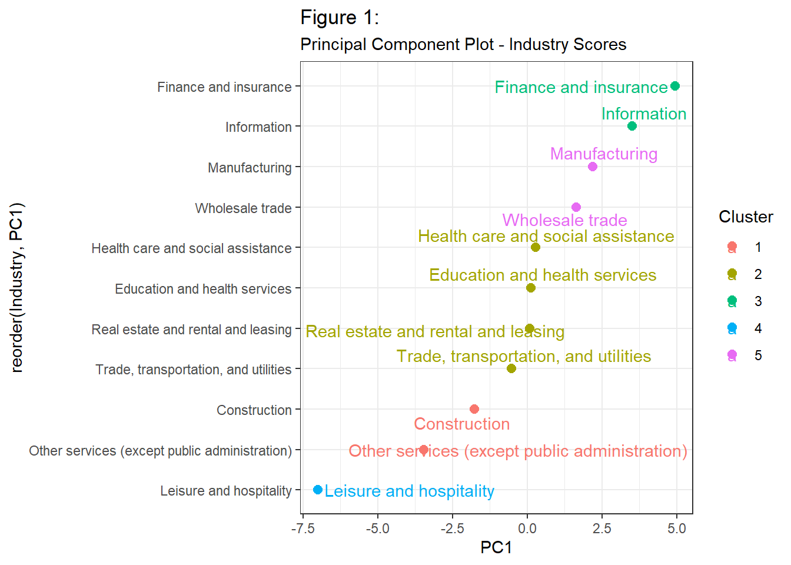

| variable | PC1 |
|---|---|
| life_insurance | 0.3096960 |
| defined_contribution | 0.3044112 |
| medicare | 0.3002425 |
| retirement_and_savings | 0.2991715 |
| vacation | 0.2934137 |
| sick_leave | 0.2922193 |
| holiday | 0.2894436 |
| personal_leave | 0.2893680 |
| long_term_disability_insurance | 0.2891475 |
| short_term_disability_insurance | 0.2864696 |
| nonproduction_bonuses | 0.2836424 |
Impact of Employee Benefits on U.S. Labor Turnover Rates
DANL 410 Capstone Report
Introduction
Motivation & Context
Employee turnover can be detrimental to an organization’s ability to carry out it’s objectives. The general consensus is that it costs around 6-9 months of an employee’s salary in advertising, interviewing, and retraining costs to replace them, but the opportunity cost of losing organizational talent can spread past this. Errors in paperwork, declines in customer satisfaction, and gaps in team dynamics from a replacement’s potential lack of experience also contribute to the expenses an organization accrues from quitting, and as such it is essential to organizational stability and worker satisfaction that quitting is minimized where possible. Across many major industries, employers use non-wage benefits not only to attract talent but also to retain employees in increasingly competitive labor markets, and while wages remain a major factor in employment decisions, employers have recognized that this non-wage compensation — such as health insurance, retirement plans, paid leave, and wellness programs—can significantly influence whether employees choose to remain with an organization. As such, employee quitting reduction has gained a following in Economics and Data Analysis, particularly through the lens of these employee benefits.
Research Question
This paper, like others discussing this topic, is primarily concerned with the access to (or incidence of) a benefit that is provided.
Because employee retention remains a critical issue for employers nationwide, understanding which benefits are most strongly associated with lower turnover rates has important implications for both businesses and policymakers. Examining patterns across industries can help identify whether specific benefits consistently contribute to workforce stability and whether affordability and accessibility affect their effectiveness. This leads to the research question: What kinds of benefits are more strongly associated with lower labor turnover across major industries in the U.S.?
Data & Method Preview
This analysis is based on various datasets from the Bureau of Labor Statistics, namely the Employee Benefits Survey (EBS) and the Job Openings and Labor Turnover Survey (JOLTS), focusing on Private-sector data collected between 2020 and 2025. Each observation within the dataset represents benefit data for one U.S. Industry classified according to the North American Industry Classification System (NAICS). As these individual datasets do not cover the exact same industries, only the shared industries and benefit types are utilized for analysis.
Given the tendency for organizations to package together benefits according to complementary benefit types & individual employee needs, high levels of multicollinearity is expected between benefits. In an attempt to combat this, this study emphasizes techniques such as Feature Engineering and Principal Component Analysis to to reduce dimensionality and the disproportionate effect of correlated benefits on regression outputs, with the caveat of giving up interpretability of individual benefits’ effects. Analysis will focus on Clustering, along with Two-Way Fixed Effect models for Linear Regression and Principal Component Regression, though this paper will follow more of an inferential structure rather than a predictive one.
Main Findings & Contribution
This analysis shows the importance of aligning organizational outcomes, as well as employee environment, to non-wage benefit options, and tentatively coroborates the benefit-wage trade-off through its effect on low annual average wages across industries.
Data
Data Source(s)
As previously mentioned, our dataset revolves around the EBS and JOLTS surveys from the Bureau of Labor Statistics. The Employee Benefits survey produces data regarding “the incidence … and provisions of selected employee benefit plans”, splitting data availability across different occupations, industries, geographic areas, full/part time work, establishment size, and average wage category, but unfortunately these demographics are mutually exclusive when considered within the full dataset (for example, the dataset doesn’t consider benefit access by industries with businesses within different U.S. census areas - only across different industries). The Job Openings and Labor Turnover Survey covers the production of monthly and annual estimates of job openings, hires, and separations, with similar demographics classifications as the EBS. However, in this case we are concerned primarily with the measurement for the quits portion of overall turnover. Additional datasets were created by categorizing benefits into specific Indexes and incorporating Principal Component Analysis, both of which serve to hopefully capture variances, reduce multicollinearity, and improve regression model stability.
Unit of Observation
Each row in the primary dataset represents a panel format observation on one Industry during a given Year.
Sample & Scope
Because the dataset does not cover cross-classification reporting on an individual firm level, but rather on aggregate national level averages, it becomes difficult to control for firm differences and employee demographics in estimating the effects of benefits. In total, the dataset reports 66 rows (11 industries, 6 years) across 12 benefits columns. From the larger EBS dataset, only the benefits that were shared between it and the ECEC were considered, and only for industries with a Private-sector. This is because the private sector contains businesses which are more likely to be responsive to changes in employee needs (i.e. non-standardized benefit practices), and comprises a larger portion of the U.S.
Key Variables
The primary outcome variable for regression analysis is an industry’s labor turnover rate, particularly the proportion made up from quitting. Predictors / Controls include industry controls like annual wage and union membership rate, along with Access estimates for 12 benefits (defined benefit, defined contribution, long-term disability insurance, life insurance, paid holiday, sick leave, medicare, personal leave, retirement and savings, paid vacation, short-term disability insurance, and non-production bonuses) and 11 industries (“Construction”, “Education and health services”, “Finance and insurance”, “Health care and social assistance”, “Information”, “Leisure and hospitality”, “Manufacturing”, “Other services (except public administration)”, “Real estate and rental and leasing”, “Trade, transportation, and utilities”, and “Wholesale trade”). For feature engineering, benefits with shared characteristics which are highly correlated are averaged into specific “Indexes” - a Retirement Index (composed of defined benefit, defined contribution, and retirement and savings), Insurance Index (composed of short-term disability insurance, long-term disability insurance, life insurance, and medicare), and Leave Index (composed of paid holiday, paid vacation, personal leave, and sick leave).
Our benefit access dataset produced 1 primary principal component (85.3% of variation covered). Significant loadings for PC1 (absolute value of loading > 0.25) includes all benefits except for defined benefit. Because of this, PC1 can be used as an impromptu “significant benefits” index to compare which industries’ benefit distribution most contributes to lower turnover, even if individual / segment effects for benefits aren’t able to be reported.
Data Quality & Limitations
In terms of limitations stemming from the main dataset, the number of observations is quite low, and ended up with some non-random missing data points from industries not having associated benefit access rates listed. Even considering that it focuses on aggregate estimates, panel data is expected to provide much more variability in its observations, and a significant increase in degrees of freedom. In an attempt to be able to utilize industry-wise interaction terms in our regression analysis given the data’s missing values, Mean Imputation by Chained Equations (MICE) is used to estimate benefit access where it would ordinarily be omitted, with missingness dummy indicators to inform the model that the missing values are Missing Not At Random (MNAR). The dataset is also, as previously mentioned, limited by its omitting of impactful control metrics, such as firm size or census region, which would help to improve the accuracy of regressed predictor-outcome relationships.
Empirical Strategy & Methods
Empirical Approach
Our primary methods of analysis focus on Linear Regression, utilizing multiple models for our feature engineered and Principal Component datasets. Both regression types are Two-Way Fixed Effects models, as we are concerned with how our predictors change across both unit-specific and time-specific factors. Using both feature engineering and PCA individually improves overall interpretability by allowing us to see the effect of benefits both from grouped characteristics and from and industry’s composition of their most representative benefits.
Model Specification / Analytical Framework
Our empirical models are as follows:
Indexed Regression Model(s):
\(QuitsRate_{i,t} = \beta_1Index_{i,t} + \beta_2Industry_{i} + \beta_3(Index_{i,t} \times Industry_{i}) + \gamma X_{i,t} + \alpha_{i} + \delta_{t} + \epsilon_{i,t}\)
PCA Model:
\(QuitsRate_{i,t} = \beta_1PC1_{i,t} + \beta_2Industry_{i} + \beta_3(PC1_{i,t} \times Industry_{i}) + \gamma X_{i,t} + \alpha_{i} + \delta_{t} + \epsilon_{i,t}\)
Where \(X_{i,t}\) represents a vector of industry control variables, \(\gamma\) represents the vector of coefficients for these control variables, \(\alpha\) captures the industry-wise fixed effect, \(\delta\) captures the time-wise fixed effect, and \(\epsilon\) is the error term that captures unobserved heterogeneity.
Interpretation & Identification
Regarding how the models are interpreted, the indexed regression models’ effects are described as, all else being equal, a one-standard-deviation increase in a benefit access predictor correlating with \(\beta\) percentage point change in quits_rate, as the MICE output is standardized and subsequently pooled to produce said output, though practically interpretation will center around the magnitude and direction of a benefit’s relationship with quits_rate in relation to other industries rather than a specific change in quits_rate. This is because of remaining multicollinearity and omitted firm demographics. The principal component regression is interpreted as, all else being equal, a one-unit increase in a principal component correlating with a \(\beta\) percentage point change in quits_rate. The aim is to provide descriptive and correlational evidence for benefit effect on quits.
Results
Main Empirical Findings & Interpretation
Beginning with the results of our benefit index regressions shown in Table 2, the Paid Leave index is most associated with lower quitting rates when being considered through the Finance & insurance (-5.659) and Information (-5.2) industries. The Retirement index is most beneficial to the Leisure & Hospitality (-4.271), Trade, transportation, & utilities (-3.428), and Wholesale trade (-3.499) industries. The Insurance index is most beneficial to the Trade, Transportation, & Utilities (-2.921) and Manufacturing (-2.338) industries. Comparing beta coefficients for the Leave Index, Retirement Index, and Insurance Index for each individual industry, there are many instances where they vary wildly, which shows the importance of choosing an acutely representative subset of benefits to provide to employees.
Using Figure 1, we visualize the prevalence of benefits through each industry’s principal component score, and use this to inform the accuracy of what Table 1 determined to be each industry’s most impactful benefits index, arranged more presentably in Table 3. Going from highest to lowest PC1 scores: Cluster 3, composed of 2 business-serving industries, both value paid leave benefits - high stress work environments such as that of tech occupations would be inclined to choose health benefits when non-compensatory benefits like mental health evaluations or work acknowledgement are available, but because these aren’t included in out dataset, benefits that enable personal fulfillment are prioritized. Cluster 5’s industries have a couple differing qualities - 1 goods-producing, and 1 business-serving - along with their best indexes differing between the two. However, only manufacturing’s index aligns with its the goals and characteristics; Manufacturing often contains physical labor, necessitating health insurance coverage to attract and keep their workforce. Generally Wholesale Trade would follow suit as it is also a laborious industry depending on the occupation. Cluster 2 is made up of a wide range of industries, primarily health services and hybrid service industries (i.e. services which have significant markets for both individual and business clients). Trade, transportation & utilities’ low annual wage necessitates deferred compensation in the form of retirement plans, and while initially Real estate, rental, & leasing seems more like an insurance-focused industry, looking at Table 1 again shows that the Insurance_Index is also significant. Lastly, Clusters 1 and 4 both are essentially solitary industries groupings-wise; Construction values the opportunity to live securely after a physically demanding, but relatively low risk career, whereas Leisure & Hospitality follows a similar stance as Trade, transportation & utilities. Low wages, high unionization rates, and high turnover shows a need for people in this industry to defer additional compensation. Considering the Principal Component Regression output from Table 4, we see that the benefit distribution that is most associated with lower turnover is that of the Manufacturing industry (-1.371), followed by Leisure & hospitality (-1.012). Again though, because the dataset for our primary analyses omits employee demographics, workplace conditions, and other non-compensatory benefits, it is implied that the PCR only captures benefit access effect on turnover in relation to other industries, rather than estimating an increase/decrease of quits_rate based off a given grouping of benefits.
Descriptive Evidence and Model Results
Table 2: Benefit Index Effect on Labor Quits Rate by Industry
==================================================================================================
Dependent variable:
---------------------------
quits_rate
Two-Way FE
--------------------------------------------------------------------------------------------------
log(annual_wage) -0.552
(2.727)
union_rate 0.061
(0.056)
Year2021 0.655***
(0.168)
Year2022 0.828**
(0.281)
Year2023 0.654
(0.376)
Year2024 0.733
(0.433)
Year2025 0.535
(0.516)
Leave_Index:IndustryConstruction 0.006
(0.669)
Leave_Index:IndustryEducation and health services -0.655
(1.510)
Leave_Index:IndustryFinance and insurance -5.659**
(2.364)
Leave_Index:IndustryHealth care and social assistance 0.116
(1.050)
Leave_Index:IndustryInformation -5.200
(4.387)
Leave_Index:IndustryLeisure and hospitality 2.156
(1.835)
Leave_Index:IndustryManufacturing -1.035
(1.962)
Leave_Index:IndustryOther services (except public administration) 0.201
(1.064)
Leave_Index:IndustryReal estate and rental and leasing -0.821
(1.450)
Leave_Index:IndustryTrade, transportation, and utilities 4.300
(4.057)
Leave_Index:IndustryWholesale trade 0.037
(1.509)
Retirement_Index:IndustryConstruction -1.502
(1.028)
Retirement_Index:IndustryEducation and health services -0.568
(1.791)
Retirement_Index:IndustryFinance and insurance -0.603
(1.196)
Retirement_Index:IndustryHealth care and social assistance 0.194
(1.598)
Retirement_Index:IndustryInformation -0.404
(1.074)
Retirement_Index:IndustryLeisure and hospitality -4.271
(1.902)
Retirement_Index:IndustryManufacturing 3.612*
(1.837)
Retirement_Index:IndustryOther services (except public administration) 0.193
(0.843)
Retirement_Index:IndustryReal estate and rental and leasing -0.105
(0.625)
Retirement_Index:IndustryTrade, transportation, and utilities -3.428**
(1.441)
Retirement_Index:IndustryWholesale trade -3.499
(2.661)
Insurance_Index:IndustryConstruction 1.660
(1.885)
Insurance_Index:IndustryEducation and health services -0.500
(2.340)
Insurance_Index:IndustryFinance and insurance 4.668*
(2.644)
Insurance_Index:IndustryHealth care and social assistance -1.686
(1.572)
Insurance_Index:IndustryInformation 3.680
(3.607)
Insurance_Index:IndustryLeisure and hospitality -0.319
(1.825)
Insurance_Index:IndustryManufacturing -2.338
(2.173)
Insurance_Index:IndustryOther services (except public administration) -0.573
(0.824)
Insurance_Index:IndustryReal estate and rental and leasing -0.352
(1.513)
Insurance_Index:IndustryTrade, transportation, and utilities -2.921
(1.875)
Insurance_Index:IndustryWholesale trade 0.649
(1.907)
Constant 7.263
(29.818)
--------------------------------------------------------------------------------------------------
Observations 66
R2 0.992
Adjusted R2 0.980
Residual Std. Error 0.132 (df = 25)
F Statistic 79.146*** (df = 40; 25)
==================================================================================================
Note: *p<0.1; **p<0.05; ***p<0.01| Index | Industry | estimate |
|---|---|---|
| Leave_Index | Finance and insurance | -5.6589901 |
| Leave_Index | Information | -5.1995616 |
| Retirement_Index | Leisure and hospitality | -4.2709753 |
| Retirement_Index | Wholesale trade | -3.4989678 |
| Retirement_Index | Trade, transportation, and utilities | -3.4281992 |
| Insurance_Index | Manufacturing | -2.3376837 |
| Insurance_Index | Health care and social assistance | -1.6857691 |
| Retirement_Index | Construction | -1.5019957 |
| Leave_Index | Real estate and rental and leasing | -0.8207330 |
| Leave_Index | Education and health services | -0.6552189 |
| Insurance_Index | Other services (except public administration) | -0.5726375 |

Table 4: Principal Component Regression Output by Industry
=====================================================================================
Dependent variable:
---------------------------
quits_rate
-------------------------------------------------------------------------------------
PC1 -0.167
(0.132)
log(annual_wage) 3.832***
(1.358)
union_rate -0.005
(0.033)
PC1:IndustryEducation and health services 0.239
(0.182)
PC1:IndustryFinance and insurance 0.482
(0.303)
PC1:IndustryHealth care and social assistance 0.222
(0.180)
PC1:IndustryInformation 0.223*
(0.129)
PC1:IndustryLeisure and hospitality -1.012***
(0.177)
PC1:IndustryManufacturing -1.371**
(0.529)
PC1:IndustryOther services (except public administration) 0.773***
(0.188)
PC1:IndustryReal estate and rental and leasing 0.258*
(0.141)
PC1:IndustryTrade, transportation, and utilities -0.495**
(0.211)
PC1:IndustryWholesale trade 0.179
(0.231)
Constant -40.861***
(14.943)
-------------------------------------------------------------------------------------
Observations 66
R2 0.990
Adjusted R2 0.983
Residual Std. Error 0.120 (df = 37)
F Statistic 137.052*** (df = 28; 37)
=====================================================================================
Note: *p<0.1; **p<0.05; ***p<0.01Connection to Research Question
Regarding the initial research question: This analysis presents a basic framework for employee benefit analysis, particularly in their effect on voluntary turnover, with the intention of minimizing the multicollinear nature of benefits. While we cannot tease out the effect of individual benefits here (perhaps it is impossible to), effective groupings of benefits that explain chunks of an industry’s unobserved heterogeneity and omitted variable bias help to ascertain a loose estimate of the kinds of benefits with which their prevalence most contributes to lower quitting rates.
Discussion & Implications
Interpretation of Findings
The results of this study can influence organizational dispositions towards leveraging untapped benefits to reduce costs associated with labor turnover, based on firm relation to macro industry characteristics. Findings seem to support the theory behind the benefit-wage trade-off, and emphasize the importance of a relevant benefits plan regardless of benefits standardization as per nondiscriminatory policy in the maintenance of employee compensation satisfaction for their given working context.
Recommendation or Decision Support
Particularly in areas of work where wages can range on the lower side, supplemental benefits packages should be utilized by businesses where possible, with an eye on the kinds of benefits that employees in that industry would prefer. In addition to this, knowing how each industry ranks against one another in terms of benefit access effect on quits and union membership could inform bargaining structure for benefits within unionized sectors.
Conclusion
Employee turnover can be detrimental to an organization’s ability to carry out it’s objectives. By determining which kinds of benefits are more strongly associated with lower labor turnover, we provide a model that serves as a basic framework for recognizing relevant characteristics of industries and benefits which influence whether employees choose to remain with an organization. Through a Two-Way Fixed Effect empirical model comprised of data from various BLS sources including the EBS and JOLTS surveys, our analysis shows the importance of aligning benefit options with employee needs and industry tendencies, and maintains the benefit-wage trade-off through its effect on low annual average wages across industries. For industries that experience this trade-off, benefits packages which complement existing gaps in employee needs should be utilized by firms in order to maintain employee perception of organizational and compensatory satisfaction.
References
Bahn, Kate, and Carmen Sanchez Cumming. Improving U.S. Labor Standards and the Quality of Jobs to Reduce the Costs of Employee Turnover to U.S. Companies. Dec. 2020.
de la Torre-Ruiz, José M. , et al. Employees Are Satisfied with Their Benefits, but so What? The Consequences of Benefit Satisfaction on Employees’ Organizational Commitment and Turnover Intentions. 2016, digibug.ugr.es/bitstream/handle/10481/86895/de%20la%20Torre-Ruiz%20et%20al.,%202019%20IJHRM%20(Accepted%20version).pdf;jsessionid=170F6490251E343E390C060BFEA491D8?sequence=1. Accessed 13 May 2026.
Ouimet, Paige, and Geoffrey Tate. Firms with Benefits? Nonwage Compensation and Implications for Firms and Labor Markets. July 2023, https://doi.org/10.2139/ssrn.4112463. Accessed 13 May 2026.